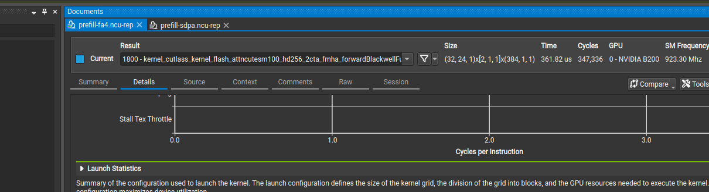
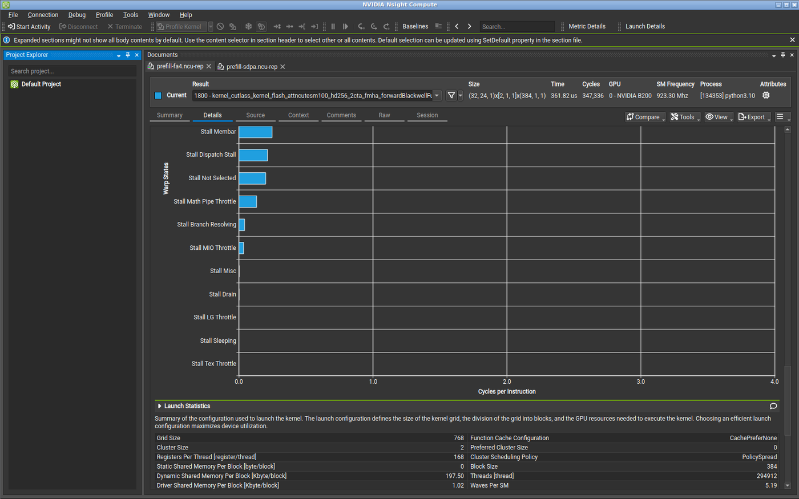
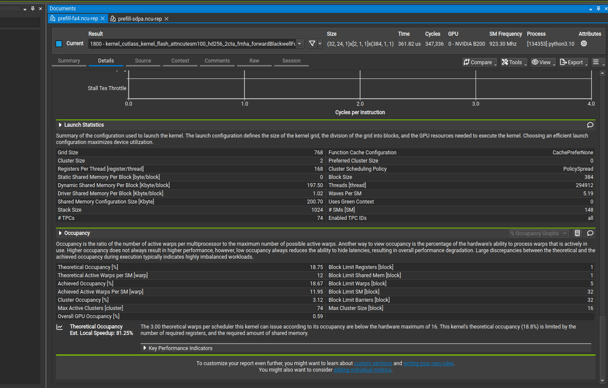

Default softmax kernel in PyTorch SDPA, vLLM, SGLang — Qwen3, Llama, Gemma, and other GQA models. Not linear attention.
1.How
FLOPs stay the same. The speedup is skipping the score-matrix round-trip through HBM.
Reminder — one head:
scores: queries × keys · grows with sequence²
Naive · scores in HBM
Flash · scores in registers
The wait is the red matrix.
Naive: every score written.
Flash: one live tile. The rest never exist.
2.How much
Qwen3.8-27B, one softmax layer, batch 1, 24 query heads, float32 scores. Flash only runs on these 16 GQA layers — the other 48 are Gated DeltaNet. Move sequence length.
HBM · off-chip DRAM
Entire score matrix
384 MB
Naive writes it here, then reads it back.
Registers · on-chip
One score tile
32 KB
Flash overwrites this every key tile. Size does not grow.
At 8k tokens one softmax layer is 6 GB of scores. Sixteen such layers in this model.
3.The tile walk
One query, four keys. Already-scaled scores \([1,\ 3,\ 0,\ 2]\). Values \([10,\ 20,\ 30,\ 40]\). Same softmax as writing the full row — one score at a time.
Filled = live score. Dashed = already folded into the running output.
Q stays on-chip. K and V stream. The score slot is overwritten.
Only the query is reused. Scores never accumulate. After the last key, \(o \approx 24.2\) — the same mix as a full-row softmax.
The fold-in is online softmax: keep a running max, a running sum of exponentials, and a running weighted mix of values. A new tile updates those three. If its max is bigger, rescale the old sum and mix first, then add. You never need the rest of the row.
\(x\) this score, \(v\) this value. \(m\) running max, \(\ell\) running exp-sum, \(O\) running mix. Then \(o = O/\ell\). Flash does this per key-tile. The algebra is in the guides below.
Same loop on a real block: one query tile, many key tiles.
Speedup is HBM trips, not FLOPs. Q is reused. K and V stream. Scores are a tile in registers, folded in with online softmax. Hopper and Blackwell only change the multiplier for the same walk.
4.Performance
Four implementations compute the same attention output:
Prefill attention-call latency
Decode attention-call latency
Latency in milliseconds, logarithmic y-axis · one NVIDIA B200 (Blackwell SM100 architecture) · bfloat16 · batch 1 · Qwen3.8-27B full-attention shape: 24 query heads, 4 key/value heads, head dimension 256.
FlashAttention-4 wins prefill: at 8k tokens it takes 0.599 ms, versus 2.279 ms for SDPA and 2.486 ms for FlashInfer. Decode flips the result: at a 32k key/value cache, FlashInfer takes 0.039 ms, versus 0.307 ms for FlashAttention-4.
Each point discards five warmups, then averages 20 backend invocations timed with CUDA events. An invocation may contain one or several kernels. Prefill uses a causal square query/key sequence; decode uses one new query token over the existing key/value cache. The decode loop reuses the same tensors, so its data can remain warm in the B200's on-chip L2 cache: these points compare backend calls, not end-to-end serving latency.
One B200, batch 1, bfloat16 inputs, 24 query heads, 4 key/value heads, head dimension 256, softmax scale 0.0625. Correctness was checked at 128 tokens against a float32-softmax reference: maximum absolute error 0.0156 for prefill and 0.00391 for decode. This profiles one of Qwen3.8-27B's 16 full-attention layers, not the complete 27-billion-parameter model.
PyTorch 2.13.0 with CUDA 13.0; FlashAttention-4 4.0.0b19; FlashInfer 0.6.17; NVIDIA driver 580.105.08; Nsight Compute 2025.3.1. PyTorch's scaled dot-product attention API dispatched its fused flash_fwd kernels. Nsight used 19 replay passes for each primary kernel.
The charts decide the winner. Nsight Compute explains every implementation. It profiles one complete GPU launch — every block and thread — and replays it to collect hardware counters. The reports use the same 4k prefill and 32k decode shapes, but run under Nsight's replay conditions; default cache control flushes GPU caches between the 19 passes. Cache counters therefore do not represent the warm timing loop. Use profiler durations to explain structure, not wall-clock speed.

One row is one complete fused kernel. Naive attention has 12 rows at 4k because score conversion, masking, softmax and the two matrix multiplies are separate.
Prefill: all four implementations
At 4k, FlashAttention-4 is 27.8× faster than naive attention, 3.36× faster than PyTorch scaled dot-product attention (SDPA), and 3.61× faster than FlashInfer. The four profiles show three different reasons.
Sum of Nsight-instrumented launch durations. Compare composition here; CUDA events above decide speed.
Four Nsight sections, in the order they appear.
1. Speed of Light — which unit is closest to its peak?
Speed of Light is utilization versus the hardware maximum while the kernel runs. It is a rate, not total work. Two kernels can both show 55% compute; the slower one just stays at 55% for longer.
| 4k prefill | FlashAttention-4 | PyTorch SDPA | FlashInfer |
|---|---|---|---|
| Duration (Nsight) | 361.82 µs | 1.08 ms | 1.18 ms |
| Elapsed GPU cycles | 347,336 | 1,195,700 | 1,316,638 |
| SM clock | 923 MHz | 1.08 GHz | 1.09 GHz |
| Compute throughput | 55.49% | 58.91% | 55.66% |
| Memory throughput (max path) | 17.60% | 68.77% | 64.02% |
| DRAM / HBM throughput | 3.27% | 1.17% | 1.06% |
| L1/TEX cache throughput | 32.74% | 81.48% | 76.57% |
| L2 cache throughput | 17.91% | 22.59% | 20.13% |
SDPA is not slower because the GPU is idle. It keeps both tensor compute and the on-chip load/store path busy for three times as many cycles. None of the fused prefill kernels saturates HBM bandwidth — DRAM is 1–3%. SDPA's 69% “memory” number is the L1/TEX load-store data pipe, not DRAM.
FlashInfer prefill looks like SDPA: 55.66% compute, 64% on-chip memory, 1.06% DRAM, 1.18 ms. These two fused kernels cluster together. FlashAttention-4 does not.
2. Compute workload — Tensor Memory versus ordinary load/store
A warp is 32 threads that issue instructions together. Instructions per cycle is how many those warps retire per clock. Issue slots busy is how often a warp scheduler actually sends an instruction.
| 4k fused kernel | FlashAttention-4 | PyTorch SDPA | FlashInfer |
|---|---|---|---|
| Executed instructions | 60,857,820 | 186,178,368 | 175,349,760 |
| Instructions per cycle (active) | 1.28 | 1.27 | 1.12 |
| Instructions per cycle (elapsed) | 1.06 | 1.07 | 0.94 |
| Issue slots busy | 26.40% | 26.82% | 23.45% |
| Issued instructions per cycle | 1.28 | 1.27 | 1.12 |
| Streaming-multiprocessor busy | 54.42% | 58.91% | 55.66% |
| Tensor pipeline (elapsed) | 54.19% | 58.91% | 55.55% |
| Tensor Memory (elapsed) | 55.49% | 0% | 0% |
| Load/store pipeline (elapsed) | 0.43% | 22.17% | 20.43% |
| Fused multiply-add pipeline | 19.96% | 8.96% | 5.94% |
| Arithmetic-logic-unit pipeline | 17.72% | 6.71% | 7.62% |
The schedulers look the same. The instruction vocabulary does not.
Tensor Memory is a Blackwell-only on-chip store for fifth-generation tensor cores — about 256 KB per streaming multiprocessor, separate from registers and shared memory. A thread issues one asynchronous matrix-multiply; accumulators land in Tensor Memory instead of being sprinkled across thread registers. FlashAttention-4's Tensor Memory path is busy 55% of elapsed cycles, but those operations are only 1.1% of peak instruction rate: a few heavy instructions occupy the hardware for a long time. SDPA never uses Tensor Memory. It issues ordinary tensor and load/store instructions continuously.
The measurements are consistent with the prefill gain: SDPA and FlashInfer execute almost the same instruction volume and spend about 20–22% of elapsed capacity issuing ordinary loads and stores. FlashAttention-4 cuts the instruction stream by roughly three while using Tensor Memory. The profile shows correlation; isolating Tensor Memory's exact contribution would require an otherwise-identical kernel without it.
3. Memory workload — better L1 reuse, not more HBM
L1 is the per-multiprocessor cache. L1/TEX is NVIDIA's combined Level-1 and texture-data path. L2 is the chip-wide cache in front of high-bandwidth memory. Shared memory is a separate, programmer-controlled scratchpad that lives in the same on-chip SRAM as L1 but is not the cache. Tensor Memory is a third on-chip space.
| FlashAttention-4 | PyTorch SDPA | FlashInfer | |
|---|---|---|---|
| HBM byte rate | 218 GB/s | 78 GB/s | 71 GB/s |
| Approx. HBM bytes moved | ~79 MB | ~84 MB | ~83 MB |
| Mem busy (access hardware) | 16.33% | 68.77% | 64.02% |
| Max request bandwidth | 17.60% | 66.99% | 62.39% |
| Memory pipes busy | 55.49% Tensor Memory | 22.17% load/store | 20.43% |
| L1/TEX hit rate | 85.91% | 0.01% | 0% |
| L2 hit rate | 80.95% | 94.43% | 94.36% |
| Register spills to local memory | 0 | 0 | 0 |
Under Nsight replay, all three fused kernels record about the same HBM traffic. FlashAttention-4 moves it three times faster and still uses 3% of peak HBM bandwidth. SDPA and FlashInfer measured requests mostly miss or bypass L1 and hit L2 (94%). That remains on-chip, but L2 is farther than L1. FlashAttention-4's 86% L1 hit rate applies to its measured L1/TEX lookups; it indicates different cache routing and locality, not necessarily more total L1 traffic. SDPA's 69% and FlashInfer's 64% “mem busy” expose L1/TEX load-store-wavefront pressure, not a flood of HBM reads.
Zero spills on every captured kernel: the high register counts stay in the register file. Dynamic shared-memory allocation is 197.5 KB per FlashAttention-4 block and 98.3 KB per SDPA block — capacity reserved, not traffic. Both designs spend almost the entire per-multiprocessor SRAM budget; they just spend it differently.
4. Warp state — waiting longer, doing more per wait
A warp issues one instruction, then waits until it can issue the next. Warp cycles per issued instruction is that interval, averaged over every warp and cycle. The bar chart is the breakdown of that interval. It is not “time waiting for a bigger GEMM to be assigned.” A larger matrix usually means more launches or more loop trips, not a larger number on this chart. The number rises only when the next instruction cannot issue.

FlashAttention-4 warp states. Long scoreboard 3.41 and barrier 2.41 dominate the 9.37-cycle interval. The kernel is latency-exposed and still faster, because each issued instruction launches more work.
| Cycles per issued instruction | FlashAttention-4 | PyTorch SDPA | FlashInfer |
|---|---|---|---|
| Warp cycles / issued instruction | 9.37 | 6.06 | 6.83 |
| Issued warps per scheduler | 0.32 | 0.32 | 0.28 |
| Active lanes / 32 | 31.98 | 31.99 | 32.00 |
| Lanes not predicated off / 32 | 31.61 | 29.36 | 31.79 |
| Long scoreboard (L1/TEX, global) | 3.41 | 0.08 | 0.34 |
| Barrier | 2.41 | 0.24 | 0.41 |
| Wait (fixed-latency math/address) | 1.02 | 1.93 | 2.09 |
| Selected (issued) | 1.00 | 1.00 | 1.00 |
| Short scoreboard (shared / memory input-output) | 0.37 | 1.18 | 1.63 |
| Math-pipe throttle | 0.13 | 0.79 | 0.78 |
| Memory-input/output throttle | 0.03 | 0.35 | 0.11 |
FlashAttention-4's warps wait more — 9.37 versus 6.06 for SDPA and 6.83 for FlashInfer — on memory dependencies and 384-thread barriers. That looks worse and still wins while issuing far fewer instructions and running large asynchronous Tensor Memory operations. The counters do not prove which waits overlap those operations; that requires a source-level timeline or ablation. SDPA and FlashInfer move more often through a longer chain of ordinary tensor, math, and load/store steps. Different work per issue.
SDPA also predicates off more lanes (29.36 versus 31.61). About 8% of its lanes are masked during an average executed instruction. The counters establish the masking, but not which source-level condition caused it.
Launch and occupancy — same resource budget, different work unit
A streaming multiprocessor is one of the B200's 148 compute units. Occupancy is how many warps live on one at once, as a percent of the 64-warp hardware maximum. Low occupancy is only a problem if it leaves the chip empty or unable to hide latency. Both kernels hit the occupancy their resources allow. Prefill has enough blocks either way.

FlashAttention-4: 768 blocks, 384 threads, 168 registers/thread, 197.5 KB dynamic shared memory. Registers and shared memory each cap residency at one block per multiprocessor. Achieved occupancy 18.67% versus 18.75% theoretical.
| 4k prefill launch | FlashAttention-4 | PyTorch SDPA | FlashInfer |
|---|---|---|---|
| Grid (blocks) | 768 | 1,536 | 1,536 |
| Threads per block | 384 | 128 | 128 |
| Total threads | 294,912 | 196,608 | 196,608 |
| Cluster size | 2 blocks | none | none |
| Registers / thread, requested | 168 | 242 | 252 |
| Registers / thread, allocated | 168 | 248 | 256 |
| Allocated registers / block | 64,512 | 31,744 | 32,768 |
| Dynamic shared memory / block | 197.5 KB | 98.3 KB | 98.3 KB |
| Total shared memory / block | 198.5 KB | 99.3 KB | 99.3 KB |
| Resident blocks / SM | 1 | 2 | 2 |
| Resident warps / SM | 12 | 8 | 8 |
| Waves / SM | 5.19 | 5.19 | 5.19 |
| Theoretical occupancy | 18.75% | 12.50% | 12.50% |
| Achieved occupancy | 18.67% | 12.06% | 11.97% |
| Register spills | 0 | 0 | 0 |
A wave is one full filling of the GPU at that residency. FlashAttention-4: 768 / (148 × 1) = 5.19. SDPA: 1,536 / (148 × 2) = 5.19. Same number of waves, different block shape. Both spend nearly the 65,536-register and ~200 KB shared-memory budget of one multiprocessor. FlashAttention-4 places one 12-warp block on each multiprocessor; pairs of blocks form clusters spanning two multiprocessors. SDPA splits the budget across two 4-warp blocks.

SDPA: theoretical 12.50%, achieved 12.06%. Block limit from registers = 2, from shared memory = 2. Same story as FlashAttention-4 — resources, not a broken scheduler.
Naive prefill: the profile is twelve kernels, not one bad kernel

The profile is the visualization: twelve rows. Score conversion and scaling take 2.03 ms; mask construction and application 1.65 ms; softmax 2.25 ms; bfloat16 conversion 0.38 ms; grouped-head expansion 0.16 ms; the two matrix multiplies only 0.60 ms.
The QKᵀ matrix multiply itself is respectable: 56.40% compute throughput, 34.54% HBM throughput, 255 registers/thread, 217.4 KB dynamic shared memory and 9.37% occupancy. Optimizing that kernel cannot rescue the call: 91.5% of profiled duration is score conversion/scaling, mask work, standalone softmax, output conversion, and grouped-head expansion. Fusion removes whole tensors and launches; it is the first optimization, before Tensor Memory.
Decode flips because the grid cannot fill 148 multiprocessors
Prefill has thousands of query tokens. Decode has one. FlashAttention-4 keeps the big 2-block cluster kernel and launches 48 blocks — 0.32 waves. Most multiprocessors get no block. FlashInfer splits the key/value cache across 296 blocks (two per multiprocessor) and streams HBM.

FlashInfer decode is visibly two launches: a 45.63 µs split-key/value attention kernel and an 11.17 µs merge. PyTorch SDPA uses the same pattern, but its 6-block combine is almost as expensive as its 256-block main kernel.
FlashAttention-4 decode · 48 / 148 busy
48 blocks. DRAM 3.93%. CUDA-event 0.307 ms at 32k.
FlashInfer decode · 148 / 148 busy
296 blocks. DRAM 45.54% · 3.02 TB/s. CUDA-event 0.039 ms.
| 32k decode | Naive | FlashAttention-4 | PyTorch SDPA | FlashInfer |
|---|---|---|---|---|
| CUDA-event latency | 0.862 ms | 0.307 ms | 0.054 ms | 0.039 ms |
| Launches | 8 | 1 | 2 | 2 |
| Nsight duration, all launches | 1.363 ms | 528.51 µs | 109.76 µs | 56.80 µs |
| Main grid blocks | varies | 48 | 256 + 6 combine | 296 + 24 merge |
| Blocks / SM, main | varies | 0.32 | 1.73 | 2.00 |
| Residency waves, main | varies | 0.32 | 0.86 | 1.00 |
| Executed instructions, main | 655M in two key/value copies | 48.70M | 8.43M | 5.21M |
| Compute throughput, main | 84.7% in key/value copy | 29.51% | 45.43% | 17.77% |
| DRAM / HBM throughput, main | 10.9% in key/value copy | 3.93% | 36.25% | 45.54% |
| HBM byte rate, main | 723 GB/s in key/value copy | 262 GB/s | 2.41 TB/s | 3.02 TB/s |
| L2 hit rate, main | 41.1% in key/value copy | 71.46% | 0.32% | 0.28% |
| Registers / thread, main | 20 in key/value copy | 168 | 240 | 250 |
| Dynamic shared memory / block, main | 0 in key/value copy | 197.5 KB | 98.3 KB | 73.73 KB |
| Achieved occupancy, main | 90.4% in KV copy | 18.75% | 11.15% | 12.20% |
| Register spills | 0 | 0 | 0 | 0 |
FlashInfer and SDPA both use the correct decode shape: split the key/value cache across enough blocks, then merge partial outputs. Their near-zero L2 hit rates are consistent with streaming; each key/value tile is consumed once. FlashInfer uses a finer 296-block split, executes fewer main-kernel instructions, and merges cheaply, so it reaches 3.02 TB/s and wins. FlashAttention-4 never gets that far — occupancy on its 48 busy multiprocessors is 18.75%, while the other 100 have no block. The eager baseline fails earlier by copying the grouped key/value cache into a dense layout.
On this Qwen3.8-27B full-attention layer — 24 query heads, 4 key/value heads, head dimension 256, group size 6 — use FlashAttention-4 for prefill and FlashInfer (or SDPA) for decode. Only 16 of 64 layers are this softmax kernel; the other 48 are Gated DeltaNet. Validate in a real server: this microbench reuses warm tensors and is not paged-KV serving.
For this B200, model shape and software stack, the phase split is the final result: FlashAttention-4 wins prefill; FlashInfer wins decode; SDPA is the strong portable fallback in both; the PyTorch eager implementation is a diagnostic baseline, not a viable implementation.
References
- Dao et al., FlashAttention (arXiv 2205.14135) — IO-aware tiling.
- Milakov & Gimelshein, Online normalizer calculation for softmax (arXiv 1805.02867).
- Dao, FlashAttention-2 (arXiv 2307.08691).
- Shah et al., FlashAttention-3 (arXiv 2407.08608).
- Earlier: GQA, MLA, linear attention.
How to cite this post
Dong, S. (2026). How Flash Attention Speeds Up — and By How Much.
https://simondong1.github.io/flash-attention.html